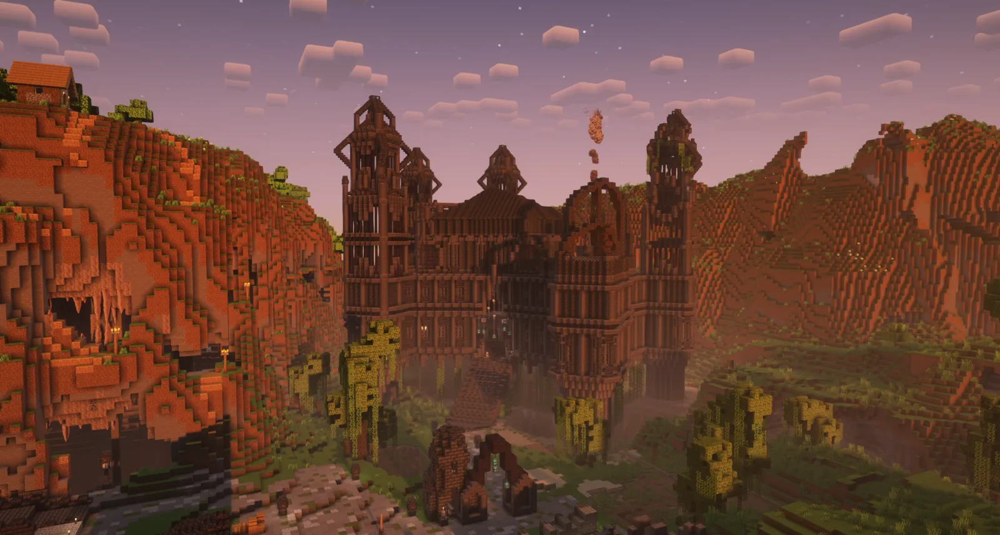
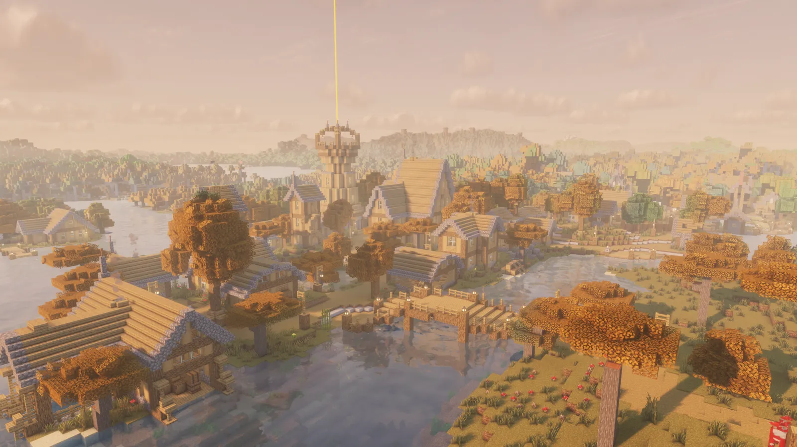
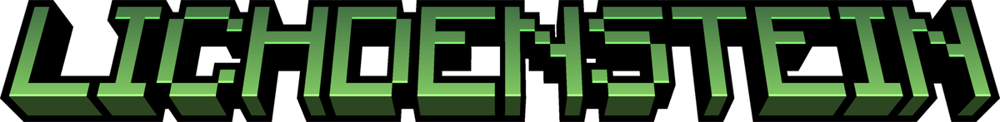

One place to play the three chapters of Kapitel Kapital. It keeps each pack ready and starts the game through Prism Launcher, which handles your Microsoft sign-in.
For Windows 11 and macOS on Apple Silicon. Needs Prism Launcher, free and open source.
The launcher shows the three chapters, Luxemburg, Lichdenstein and Frangfurd, and plays the one you pick.


A creative building expansion filled with tools, decorations, blocks and automations.
Pack
Changelog
No entries yet.From the wiki
Bellum Castle
A trade empire grown out of a mountain pass. Read the history →
A plug-and-play vanilla server with economies, updated survival, and character progression. Launches with your visual pack.
Pack
Changelog
No entries yet.From the wiki
Lichdenstein
Small, cautious settlements on scarred land. Read the history →A modern creative expansion with new tools, visual improvements and alternative automations.
Pack
Changelog
No entries yet.From the wiki
The Obelisk
A built-up city-state, read from a distance. Read the history →